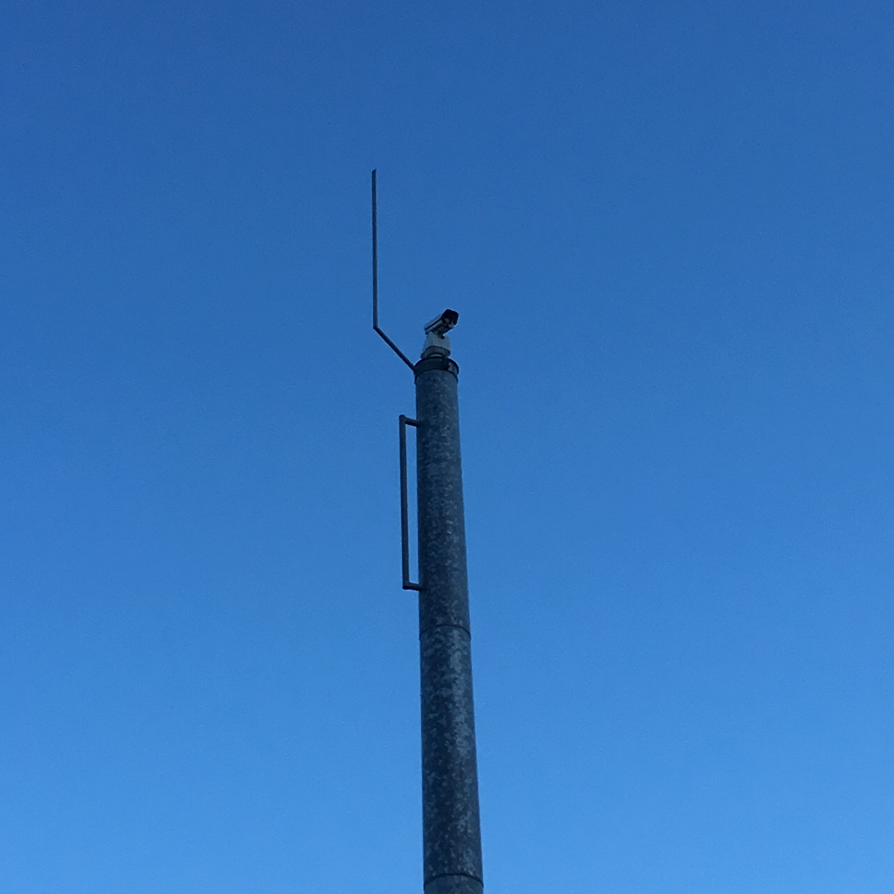
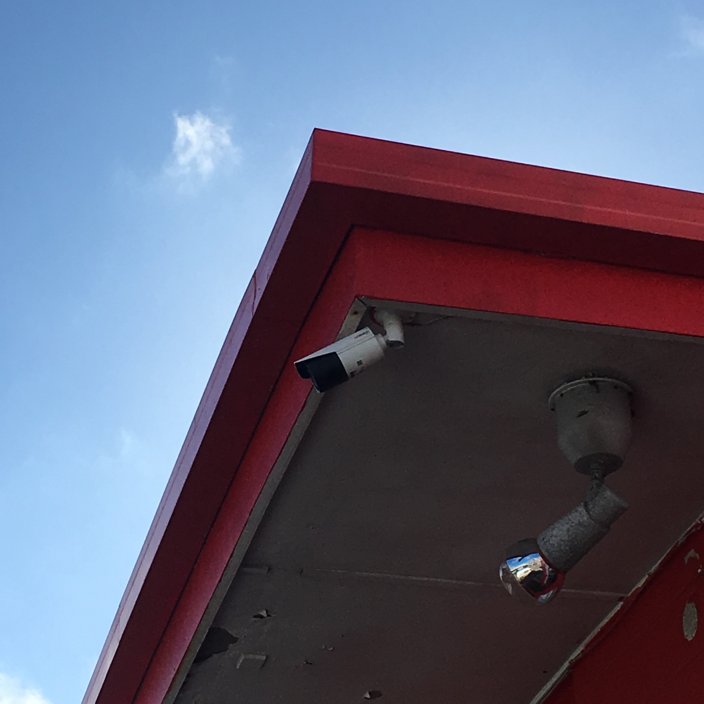

Traffic Cameras
Traffic Cameras are Video Cameras which stream live updates of roads which are prone to having large Traffic conjestion. The Cameras allow users to see any potential vehicle incidents before and assess the road conditions before they make their desired journey.
Other Traffic Cameras in the Wellington Region are shown on the NZ Transport Agency Website.

Security Cameras
Security Cameras (also commonly known as CCTV Cameras) allow monitoring of specific environments and provides added security if a trespasser attempts to break into the property.
See the HowStuffWorks website for more information.